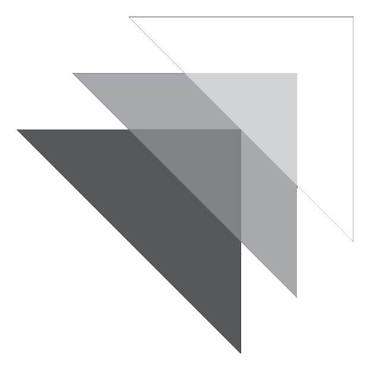
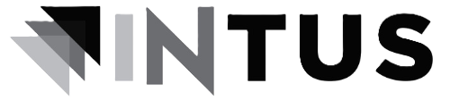

—
❓
🔔
☀️
☰

Te levamos ao próximo nível.
🏠
Início
💪
Meus Treinos
🏃
Meu Cardio
📊
Histórico & Evoluções
📸
Compartilhar treino
🥇
Ranking
📣
Feed
🌟
Mural de resultados
🤝
Comunidade
🏆
Desafios
🥗
Nutrição
📈
Avaliações
💬
Central
👤
Meu Perfil & Conquistas
🤝
Quem Somos
🎁
Indique um amigo
🔍
Zoom
85%
100%
115%
130%
🌙
Modo Escuro
💬
Falar com Suporte
🚪
Sair
← Sair do treino
TEMPO TOTAL
00:00:00
Descanso
00:00
—
×
00:00
·
0.00 km
×